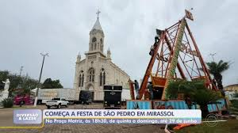
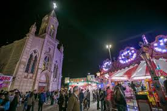

1. Aspectos Sociais
- Alto IDH: Mirassol foi uma das cidades com maior Índice de Desenvolvimento Humano (IDH) de São Paulo em 2023.
- Qualidade de vida: A cidade investe em saúde, educação e infraestrutura, com ações como revitalização de praças e melhorias nas vias.
- População crescente: Com cerca de 65 mil habitantes em 2025, Mirassol atrai novos moradores pela segurança e pelas oportunidades.
2. Aspectos Culturais
- Tradições preservadas: Mirassol mantém festas religiosas e eventos culturais que celebram sua história.
- Patrimônio histórico: A cidade valoriza suas raízes com memoriais e espaços públicos dedicados aos pioneiros.
- Esporte e lazer: O Mirassol Futebol Clube é um símbolo cultural e esportivo com forte presença local.
Tradições preservadas de Mirassol
 3. Aspectos Econômicos
- Indústria moveleira: Mirassol é um dos principais polos nacionais na produção de móveis.
- Comércio ativo: O comércio é variado e dinâmico, com destaque para serviços e varejo.
- Agronegócio e logística: A cidade aproveita a agricultura regional e a proximidade com São José do Rio Preto para facilitar o transporte de produtos.